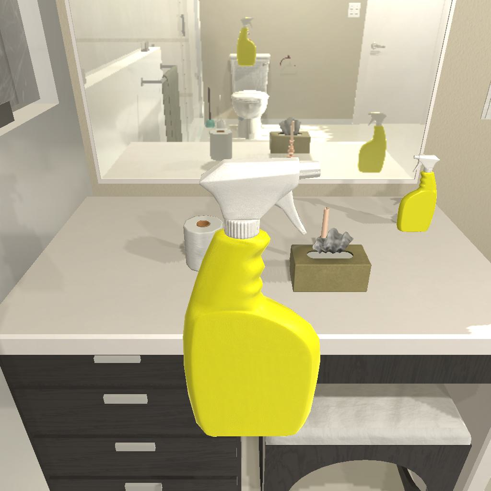

---------------------------------------------------------task: 28---------------------------------------------------------
--------------------------------------------------------------------------------------------------------------------------------------------------------------------
--------------------------------------------------------------------------------------------------------------------------------------------------------------------
Step:--------------------------------------------------------------------------9-------------------------------------------------------------------------------
----------------------------------------
VLM Prompt:
Image1:
**Instruction**
1. Analyze the provided image to identify all visible household objects, focusing on those relevant to the task description "find two spraybottle and put them in toilet."
2. Use the analysis of the image and the task hint "The agent must find an object of the desired type, pick it up, find the correct location to place it, put it down there, then look for another object of the desired type, pick it up, return to previous location, and put it down there with the other object." to answer the question: what is the most reasonable action in the choices for the task description "find two spraybottle and put them in toilet"?
4. Decide and write the answer using the template: The answer is: (i): , where i is the real number. If there is no desired object in the image, search every place based on **Initial Observation** to find the object. And if no one is exactly correct, choose a similar answer.
**Initial Observation**
You are in the middle of a room. Looking quickly around you, you can see bathtub (1), bathtubbasin (1), cart (1), sink (1), garbagecan (1), sinkbasin (1), countertop (1), drawer (1-4), toilet (1), toiletpaperhanger (1)
**Answer Choices**
(1): go to bathtub 1
(2): go to bathtubbasin 1
(3): go to cart 1
(4): go to sink 1
(5): go to garbagecan 1
(6): go to sinkbasin 1
(7): go to countertop 1
(8): go to drawer 2
(9): go to drawer 3
(10): go to drawer 4
(11): go to toilet 1
(12): go to toiletpaperhanger 1
(13): open drawer 1
(14): close drawer 1
(15): put spraybottle 1 in/on drawer 1
(16): examine drawer 1
**Answer**
Let's think step by step by following the instructions.
----------------------------------------
----------------------------------------
Original Response:
First, we need to identify the visible household objects in the image relevant to the task. In the image, we can see two spray bottles, one in the forefront and another reflected in the mirror on the countertop.
Next, considering the task description "find two spraybottle and put them in toilet" and the task hint, the most reasonable action is to pick up the spray bottles and place them in the toilet.
Based on the **Initial Observation** and the **Answer Choices** provided, the first step is to go to where the spray bottles are located, which is the countertop.
Therefore, the answer is: (7): go to countertop 1. After reaching the countertop, the next actions would involve picking up the spray bottles and then going to the toilet to place them there. However, these actions are not listed in the provided answer choices.
----------------------------------------
----------------------------------------
>>> Refine Original VLM Response and Get Pure Action: No action
----------------------------------------
-----------------------------------------------------------------
Running time: 7.853492975234985 seconds
Total Money: 10.04734
-----------------------------------------------------------------
-----------------------------------------------------------------
Text Observation:Nothing happens.
-----------------------------------------------------------------
UNSUCCEED